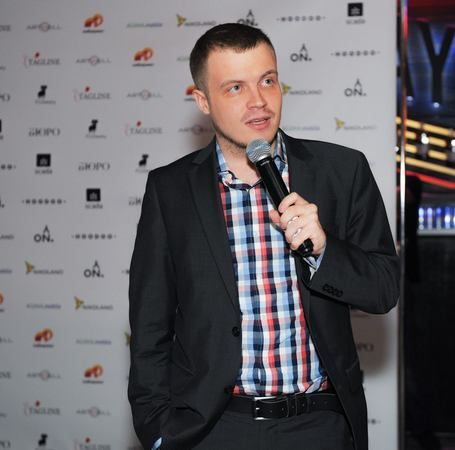
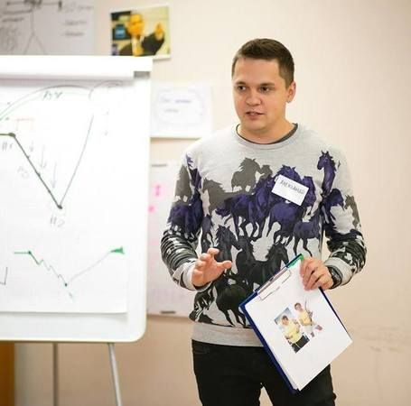
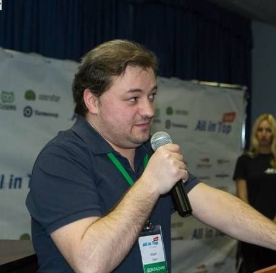

Доклады
-
 Терехов Андрей Ruward , Генеральный директор
Терехов Андрей Ruward , Генеральный директорDigital-стратегия развития бизнеса – сторона клиента, сторона агентства
"Что должна и чего не должна содержать эффективная стратегия развития бизнеса в digital-среде
Подводные камни и тонкие места при разработке стратегии силами клиента
Типовые ошибки агентств при составлении digital-стратегии, вторая сторона баррикад
Эффективная связка клиент-агентство при реализации digital-стратегии" -
Илюхин Алексей Dalee Digital Agency , Head Of Creative
Как перестать «креативить» и заняться делом
О чем плачет креативщик?
Как «поженить» бизнес-задачи и полет фантазии.
Основные точки несоприкосновения.
Как определить, что креативная идея сработает?
Шесть важных проверочных вопросов?
Источники «полезного» креатива.
Как создавать идеи, решающие бизнес-задачи -
 Куприянова Елена Телекомпания НТВ , Руководитель проекта НТВ-Digital
Куприянова Елена Телекомпания НТВ , Руководитель проекта НТВ-DigitalСами с усами: как делают контент для SMM на стороне клиента и в агентствах
1. Клиент всегда прав. Просто у нас разные клиенты
2. Команда на стороне клиента и агентства: плюсы и минусы
3. Зачем отдавать котент на аутсорс агентству
4. Риски есть с обеих сторон, главное, кто пьет шампанское
5. Контент для новостных и развлекательных телеканалов в социальных сетях: агентский и клиентский опыт. -
Севальнев Дмитрий pixelplus.ru , руководитель департамента SEO
Практические рекомендации для SEO-специалиста 2016
1. Рандомизация выдачи
- общие принципы
- идентификация и проявление «бандита»
- плюсы и минусы для SEO2. Что делать со ссылками?
- текущий учёт ссылочных факторов
- фильтрация коммерческих ссылок Яндексом
- рекомендации по работе3. Продвижение сразу в нескольких регионах
- два различных подхода
- работа в рамках одного поддомена / хоста
- требования к содержанию -
 Никитин Иван , основатель «Иван Никитин и партнеры»
Никитин Иван , основатель «Иван Никитин и партнеры»Использование семантической (структурной) разметки на сайтах и ее влияние на поисковое продвижение
· Назначение смысловой разметки
· Основные стандарты, используемые для структурированный разметки
(микроформаты, микроданные, схемы разметки)
· Особенности schema.org
· Способы внедрения разметки на страницах сайта
· Основные схемы, рекомендуемые используемые для сайтов e-Commerce
· Способы проверки корректности разметки
· Ответы на вопросы -
Иванов Алексей ISEE Marketing , Генеральный директор
Улучшение поведенческих факторов сайта
Именно улучшение, а не попытки накрутки. При правильном подходе работа с поведенческими факторами выходит за рамки того, что обычно называют юзабилити. Комплексный подход, включающий выстраивание правильной цепочки коммуникации с потенциальным клиентом на сайте, а также изменение профиля входящей на сайт аудитории.
-
Габорак Дмитрий Liquid Development , Lead Character Artist
Продакшен реалистичных 3D персонажей для анимационный индустрии. (фильмы и игры)
1 Личный опыт - как начинал и к чему пришел
2 Работа сейчас и приобретенный опыт
3 Чем отличаются русская, европейская, азиатская и американская CG индустрии.
4 Отличия работы в разных странах, подготовка для получения опыта за границей.
5 С чего начинать, чтобы быть успешным.
6 Какие программы и пути создания персонажа чаще всего используются и что на самом деле нужно заказчикам.
7 Что нужно иметь в портфолио, над чем работать, где и чему учиться.
8 Советы и трюки для начинающих и профессионалов. -
 Алаев Макс R-STUDIOS , Art-Director, инструктор RealTime School курсов обучения The Foundry Nuke - инструмента для композинга и создания спец. эффектов.
Алаев Макс R-STUDIOS , Art-Director, инструктор RealTime School курсов обучения The Foundry Nuke - инструмента для композинга и создания спец. эффектов.«Чемпионы: Быстрее. Выше. Сильнее» Дрессировка CG массовки. 600 CG-шотов за два месяца!
• Немного про Олимпийские игры и Олимпийских чемпионах. Греко-Римская борьба? Теперь мы все про нее знаем!
• Разработка художественной концепции - как из одного зала сделать три разных. Или четыре :)
• CGI массовка, как заставить ее рассаживаться, куда нужно из шота в шот и не сорвать связки. -
 Ёжиков Алексей RUWARD , Директор по развитию
Ёжиков Алексей RUWARD , Директор по развитиюАнтихрупкий digital-маркетинг
В докладе мы обсудим, как практически подойти к построению антихрупкой маркетинговой системы для организации. Поговорим о глубине стратегического планирования, подборе инструментов и экспериментах для построения системы, усиливающейся от внешних воздействий.
-
Ветров Юрий Mail.ru , Руководитель отдела проектирования и дизайна интерфейсов
Дизайн с выхлопом
Пятая часть серии презентаций о UX-стратегии посвящена осмысленности дизайнерской работы. Как понять, что именно нужно делать с продуктом и его интерфейсом, не потерять и не размазать это видение по ходу работы, а после оценить, насколько хорошо мы сделали свою работу. Пользовательские исследования, аналитика и другие способы сделать свою работу хорошо.
-
 Найчуков Константин eLama.ru , эксперт по контекстной рекламе и аналитике
Найчуков Константин eLama.ru , эксперт по контекстной рекламе и аналитикеМастер класс: Работа с подрядчиком по контекстной рекламе: постановка задач, выбор KPI, составление брифа
.
-
 Меньшиков Сергей Лаборатория новых медиа , CEO
Меньшиков Сергей Лаборатория новых медиа , CEOДистрибутивная модель распространения контента
.
-
Раменский Алексей Тэглайн , Главный редактор
Презентация рейтингов сервисов и технологий для разработчиков, Тэглайн-2016
Тэглайн (в честь своего 10-летия) представит ряд уникальных рейтингов сервисов и технологий, использующихся при разработке веб-сервисов и заказных проектов в digital: wiki-системы, инструменты для дизайна и проектирования, репозитории для хранения кода, языки программирования, backend- и frontend-фреймворки, среды разработки (IDE), СУБД (базы данных), системы контроля версий, серверные операционные системы, мобильные платформы / ОС, краш-репортеры, сервисы для тестирования и сбора статистики мобильных приложений.
=====
Рейтинги будут интересны большинству российских технических и маркетинговых руководителей, отвечающих за подбор технологических решений на digital-рынке, и сотрудникам, которые ломают копья в бесконечных холиварах, какой инструмент или технология лучше.
Теперь мы все посчитали. -
 Софин Юрий Wizard.Sape , ведущий аналитик
Софин Юрий Wizard.Sape , ведущий аналитик4 рабочих способа как улучшить позиции сайта в поисковой выдаче
• Новый взгляд на семантическое ядро
• Технические ошибки. Как искать и что исправлять
• Мифы о «seo-текстах»
• Покупать или не покупать ссылки -
 Арсенкин Александр pixelplus.ru ,
Арсенкин Александр pixelplus.ru ,Частые ошибки SEO-специалиста
1. ТОП-10 критических ошибок по SEO
Структура сайта
Внутренние факторы
Анализ данных (причинно-следственная связь)
2. Своевременное обнаружение и исправление ошибок
3. Рекомендации и выводы -
Никитин Иван , основатель «Иван Никитин и партнеры»
AMP страницы на практике — новые и перспективные технологии Google
· Мобильный интернет, насколько он важен
· Проблемы мобильного интернета
· Проект Accelerated Mobile Pages (AMP)
· AMP страницы в выдаче поисковых систем
· Основы AMP страниц
· Разметка и основные элементы AMP
· Использование AMP в передовых CMS
· Ответы на вопросы -
Емельяненко Игорь lunaDVA , production supervisor
Эффективный видео-монтаж.
1. Сортировка исходного материала - ключ к эффективному монтажу
2. Приемы монтажа
3. Davinci Resolve цвето-кор -
 Амирян Андрей Calltouch , Менеджер по работе с партнёрами
Амирян Андрей Calltouch , Менеджер по работе с партнёрамиКак потратить как можно больше денег на рекламу без отдачи
Способы отслеживания эффективности рекламы с помощью анализа источников звонков
Построение сквозной аналитики
Практические советы, как неэффективно работать с данными
Кейсы -
 Фетюхин Николай MST , Генеральный директор
Фетюхин Николай MST , Генеральный директорЛучшие практики применения ibeacons в рекламе!
- Кратко о технологии
- Лучшие мировые и российские кейсы
- bonus track: рассказ о том, как делали навигатор для Стачки -
Пекарский Максим Argenta-team , Lead CG Artist
Анатомия визуальных спецэффектов Голливуда на примере блокбастера Майкла Бея "Трансформеры-2. Месть падших"
- Изнанка создания визуальных спецэффектов ведущих студий Голливуда
- Разбор нескольких эффектов «от» и «до»
- Сравнение технологий и отсыл к другим кинопроектами -
 Захаров Вадим Семантика.Онлайн & Захаров Групп , Руководитель
Захаров Вадим Семантика.Онлайн & Захаров Групп , РуководительСемантика в контентных проектах
- Нюансы сбора семантики для информационных проектов (инструментарий, основные принципы и тд)
- Какие группы ключей использовать сначала и почему. Как посчитать рентабельность статей.
- Нюансы формирования ТЗ по информационному семантическому ядру -
 Иванов Денис, Крымин Сергей Design Creator, KVINTAGROUP , Креативный директор, PR директор
Иванов Денис, Крымин Сергей Design Creator, KVINTAGROUP , Креативный директор, PR директорОпыт разработки фото-видео креатива для международной компании с привлечением селебрити
1. Построение коммуникаций с клиентом, лояльность
2. Работа с клиентом на одной волне и на одном дыхании
3. Бекстейдж тоже работает -
Найчуков Константин eLama.ru , эксперт по контекстной рекламе и аналитике
Ремаркетинг в AdWords
- Задачи веб-аналитики: зачем все эти цифры?
- Как связать Директ с Метрикой. Отчеты статистики в Яндекс.Директе.
- Анализ трафика и эффективности рекламных кампаний.
- Клики есть, продаж нет: поиск проблем и их решение. -
 Шуваев Ярослав Альфа Банк , Product Owner Альфа-Мобайл
Шуваев Ярослав Альфа Банк , Product Owner Альфа-МобайлУправление опытом взаимодействия в гибком производстве, на примере Альфа-Мобайл
В своей лекции Ярослав Шуваев расскажет на примере мобильного приложения Альфа-Банка как планировать и реализовывать улучшения пользовательского опыта продукта в условиях гибкого производства.
UX-стратегия для Agile.
В этом блоке вы узнаете:
- как организовать стратегическое планирование жизни продукта при гибком производственном процессе.
- Как организовывать стратегическую сессию.
- Эффективная команда и эффективные инструменты страт-сессии.
- Результирующие документы.UX-дизайн для Agile.
В этом блоке вы узнаете:
- Как интегрировать дизайн-процесс в гибкое производство.
- Дизайн синхронизированный со scrumboard'ом.
- Организация дизайна с учетом различных тачпоинтов. -
 Батиевский Юрий Antop , Директор
Батиевский Юрий Antop , ДиректорSEO-аналитика интернет-магазина
- Что анализируем, зачем и как часто
- Инструментарий и отчеты
- Кластеризация запросов
- Анализ товарных категорий -
Шестаков Александр PR.Sape , руководителя проекта
Пасхальный доклад. Воскреснуть после минусинска.
- современные методики продвижения молодых сайтов
- неочевидные кейсы
- рекомендации по обходу минусинска -
 Либерте Ольга, Остриков Илья Фрилансер, VIZART , Арт-директор, Руководитель отдела оперативной графики телеканала «Россия 24»
Либерте Ольга, Остриков Илья Фрилансер, VIZART , Арт-директор, Руководитель отдела оперативной графики телеканала «Россия 24»Тренды в motion design, кино и рекламе
1) Как изменился рекламный рынок во время кризиса.
2) Качество продакшна или дешевизна производства?
3) За что я не люблю супер-скоростной продакшн.
4) Несколько роликов из моего портфолио, где все снято на "зеленку". И они работают!)))Тренды в моушн дизайне: от идеи до реализации. Инструментарий современного моушн-дизайнера.
- Об индустрии моушн-дизайна
Тренды в моушн-дизайне:
- что это
- как появляются, живут и умирают
- тренды вчера, сегодня, завтра -
 Богомолов Александр REDMADROBOT , Дизайнер мобильных приложений
Богомолов Александр REDMADROBOT , Дизайнер мобильных приложенийСоздание экосистемы дизайна продукта
1. Целостность
Про позиционирование, визуальную часть, копирайт.
2. Гайды и шаблоны?
Приведу примеры хороших и плохих дизайн-систем, расскажу что как и зачем.
3. Экономия ресурсов при шаблонизации и проектировании дизайн-систем
Про ускорение процессов и пользе системного подхода при соблюдении базовых правил
4. Все счастливы
В целом: хочу рассказать о важности красивого, понятного и целостного продукта и о том как этого добиться через свои усилия. -
Чернов Евгений qb , Директор по развитию
Стратегическое планирование. Подводим пользователя к покупке квартиры за 10 000 000 рублей
- правильное описание ЦА;
- выявление мест присутствия;
- разработка медиа плана;
- работа с точками коммуникации с ЦА;
- перевод ЦА из он-лайна в оффлайн;
- учет пользователей, ведение лидов по базам, работа с тренерами CallTouch, CollBack
Все это на живом примере разработки годовой рекламной компании для строительной компании -
Шелехов Роман Redmadrobot , Дизайнер
ТРИЗ для дизайнеров
1. ТРИЗ — теория для инженеров или творческий метод мышления, подход к решению любых проблем?
2. Почему дизайнеру важно научиться решать задачи с помощью систематизации знаний и системных подходов.
3. Что такое идеальный конечный результат и как применять законы развития систем на практике. -
Хаит Юрий Основатель маркетингового агентства Bitkey, веб-аналитик , .
Развитие поведенческих факторов брендовым трафиком
- коммуникационная стратегия vs. накрутка поисковых подсказок
- CTR брендового и конкурентного трафика
- учёт брендовых запросов в мультиканальной последовательности
- факторы авторитетности и удовлетворённости пользователя
- реальное влияние на конкурентную выдачу -
 Медведев Сергей Potato Monsters CDS , Директор
Медведев Сергей Potato Monsters CDS , ДиректорМаркетинг будущего не делит мир на оффлайн и онлайн.
Маркетинг, как мы его знаем перерождается, подход «войны маркетинговых бюджетов» работает уже значительно хуже, а пользователи ждут индивидуального обращения. К тому же мир переживает смену парадигмы потребления, которая проносится под знамёнами Mobile Shift. Аудитории спокойно просеиваются до индивидов, с информацией о его текущей ситуации(context) и историей взаимодействия с ним. Оффлайн становится более онлайновым и пользователи всё больше ждут этого интерактива в реальном мире. Мы разберём реальные кейсы context-based маркетинга и оффлайн рекламных акций с использованием онлайн инструментов, так же осмотрим стратегии и решения крупнейших интернет компаний и спланируем развитие каналов донесения до пользователя информации, соответственно определимся, как жить дальше и куда лучше бросить свои силы в развитии своих компетенций.
-
Горностаев Алексей Фэтфокс , Генеральный директор
Комплексный маркетинг по Agile Scrum (гибкое планирование)
Доклад для владельцев и руководителей компаний, менеджеров проектов и директоров по маркетингу в малом и среднем бизнесе.
- Маркетинг в России и в мире
- Влияние маркетинга на прибыль компании
- Структура комплексного маркетинга
- Проблемы классического подхода к маркетингу
- Фокус на потребителе и изменениях в маркетинге
- Принципы и преимущества гибкого планирования в маркетинге
- Сравнение классического и agile-подхода в маркетинге
- Два типа команд в agile-маркетинге
- User stories и цели как базис для стратегических и тактических решений
- Движение к целям в agile-маркетинге
- Принцип ТОП-1 и ТОП-5
- Итерации (спринты) в agile-маркетинге
- Доска задач
- Ретроспективный анализ и стратегические сессии в agile-маркетинге
- Инструменты для управления маркетингом по agile
- Внедрение agile у себя в компании -
Латыпов Артур SEO-Интеллект , Руководитель SEO отдела
Текстовые факторы ранжирования: Обзор и воздействие.
- текстовое ранжирование
- подробный разбор факторов
- формула текстовой релевантности bm25(f)
- примеры воздействия -
 Остриков Илья VIZART , Руководитель отдела оперативной графики телеканала «Россия 24», куратор факультета "Моушн-дизайн" в ScreamSchool
Остриков Илья VIZART , Руководитель отдела оперативной графики телеканала «Россия 24», куратор факультета "Моушн-дизайн" в ScreamSchoolТренды в моушн дизайне: от идеи до реализации. Инструментарий современного моушн-дизайнера.
- Об индустрии моушн-дизайна
Тренды в моушн-дизайне:
- что это
- как появляются, живут и умирают
- тренды вчера, сегодня, завтра -
 Ткачев Василий allintop.ru ,
Ткачев Василий allintop.ru ,Работа с молодыми сайтами в эпоху борьбы со ссылками
- Можно ли получить поисковый трафик всего за месяц?
- Как подогреть интерес поисковых роботов?
- Первоочередные SEO задачи
- Контент, его распространение и весомость -
 Анисимов Андрей ООО "Реаспект" , Директор "Реаспект-Промо"
Анисимов Андрей ООО "Реаспект" , Директор "Реаспект-Промо"Как внедрить сквозную аналитику? Как с её помощью увеличить доходность бизнеса?
1) Что такое Performance-Marketing? За что должно отвечать агентство при такой модели работы.
2) Как должна быть организована аналитика рекламных каналов для эффективной работы.
3) Внедрение CRM в бизнес клиента (услуги) на примере Битрикс-24.
4) Внедрение CRM в бизнес клиента (продажи) на примере Retail-CRM
5) Технология интеграции CRM и Google Analytics понятными словами
6) Технология импорта данных о расходах на рекламу с разных рекламных каналов простыми словами
7) Организация сквозной аналитики.
8) 3 кейса о повышении эффективности интернет-маркетинга за счет правильной организации сквозной аналитики. -
 Сидорин Дмитрий Sidorin LAB ,
Сидорин Дмитрий Sidorin LAB ,Репутационное seo без бюджета
- Факторы ранжирования serm
- Продвижение существующих площадок или создание новых
- Появление социальных сетей в serp
- Нестандартные площадки: slideshare, ответы mail и др.
- Оценка результатов serm
- Как делать serm бесплатно
- Право на забвение и суды с площадками -
Обмелюхин Владимир, Чернов Евгений qb3d , Руководитель и совладелец
Архитектурная визуализация - точка отсчета в продажах недвижимости
- Архитектурная визуализация - важный элемент в представлении объекта недвижимости, точка отсчета любого проекта
- подбор стилистики под ЦА, с примерами работ с крупнейшим компаниями недвижимости РФ
- лаги в визуализации, которые портят все
- портирование объекта на разные носители и функциональные области применения: печатка/сайт/подбор квартир/touch-панели
- дополненная реальность объектов, почему не пользуются строители? -
 Яковлев Антон Интерактивное агентство Кельник, ООО "Планоплан" ,
Яковлев Антон Интерактивное агентство Кельник, ООО "Планоплан" ,Виртуальная реальность - вчера, сегодня и завтра.
1. Зарождение технологии
2. Перспективные области применения и развития
3. Приближаем будущее -
Кириллов Дмитрий VRAR Lab , Генеральный директор
Что такое виртуальная реальность и где она нужна?
- Обзор VR тхнологий
- Объем рынка
- Сферы применения
- Кейсы
- Перспективы -
Болуженков Александр Advanced Schematics , Founder, Art-Director
Графика в играх - оптимизации производства визуального контента в современных игровых проектах. Обсуждение подходов и проблем оптимизации, с примерами из проектов SkyForge, FireFall, Doom 4, LawBreakers и не только
- Разница между подходами к производству в СНГ и в Западных компаниях.
- Откуда появляются основные издержки, и как с ними бороться
- Подходы к ценообразованию при расчете стоимости производства ассета -
 Грушенков Михаил Wireframe , Owner & Art Director
Грушенков Михаил Wireframe , Owner & Art DirectorКак выжить в войне с клиентом
1) Причины войны с клиентами в нашей индустрии
2) Специфика российского рынка
3) Как решать спорные ситуации?
4) как выжить в войне с клиентом? -
Никоноров Сергей Ingate Digital Agency , Руководитель направления поискового продвижения
Подбираем конверсионную семантику для сайта
Какие запросы дают максимальную отдачу? (исследование по тематикам: как влияет длина запроса, как влияют коммерческие маркеры, разница между пользователями с различных устройств и так далее)
- Как формировать семантическое ядро? (какой инструментарий используем,
- какие данные и откуда получаем)
- Советы от Ingate (как учесть полученные данные при подборе семантического ядра для сайта)
- Кейсы (увеличение отдачи от РК за счет детальной проработки семантики) -
 Жуков Максим KISLOROD , CEO, Управляющий партнер
Жуков Максим KISLOROD , CEO, Управляющий партнерРабочие инструменты интернет-маркетинга в условиях отсутствия спроса.
Что делать когда нет времени на создание спроса, а контекстная реклама не даёт нужных результатов?
Пошаговая методика выделения горячей целевой аудитории в социальных сетях на примере успешного кейса
Нюансы настройки рекламной кампании с точным попаданием в ЦА -
 Кечинов Михаил REES46 , Основатель
Кечинов Михаил REES46 , ОсновательКак с помощью персонализированных триггерных рассылок повысить число заказов на 5%
Типы триггеров: больше — не значит лучше.
Правильный тайминг: когда слать, приоритет триггера, риски.
Компоновка письма: блоки и их порядок, мелочи, влияющие на открываемость писем.
Результат: на 5% больше заказов.